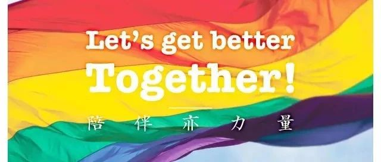

[转][北同][招募]跨性别需要被看见！
时至今日，跨性别者的生活还没有被真实而有力地听到和看见，
即使是在性少数群体中，跨性别群体仍然被边缘被误解……
因此，我们需要一支强劲又鲜活的笔，以及这支笔背后的你们。
让我们一起，以文字的形式，记录跨性别者的爱与痛，
为跨性别者，发声！
加入“北同文化”跨性别专栏？
1.你将在这个20万粉丝的平台施展你的才华，洋洋洒洒，缔造阅读量过万的传奇！


2.你将参与众多由北京同志中心提供的性与性别领域专业课程，成为一名具有多元胜任力的社群伙伴！
3.你将结识各行各业志同道合且优秀的LGBTQQIAA+伙伴，开启北京同志中心志愿者的精彩人生！
4.你将获得中心颁发的志愿者工作证明，并且，如果你表现优异，我们会乐意为你写推荐信，助力你前往更高更远的平台！
我们希望你？
1.具有文字嗅觉，喜爱追踪故事。
2.对跨性别群体友善，想要参与跨性别群体生存现状的改变。
3.能每月固定的产出佳作，持续服务6个月以上。
心动请联系：TransBJLGBT0806@protonmail.com
请注明：我申请成为跨性别专栏志愿撰稿人
主编核桃，期待你的加入

编辑：Tenlossiby

本文原文转自